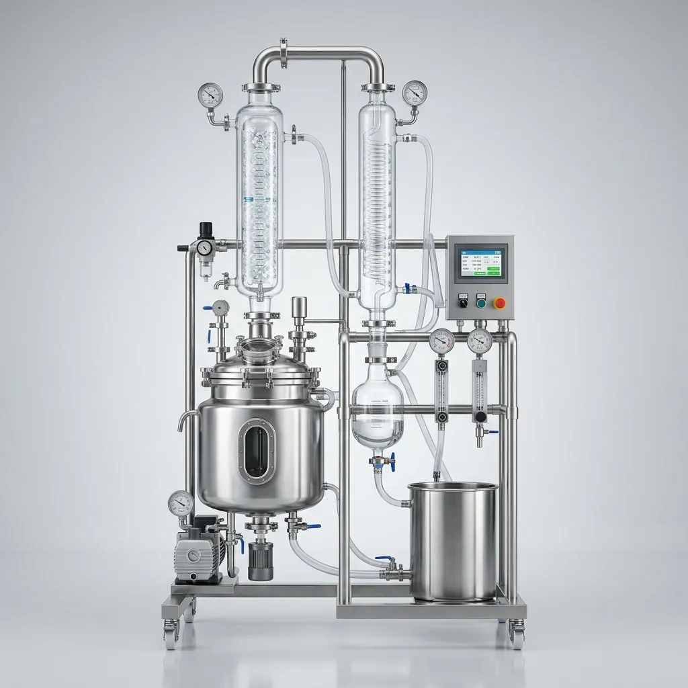
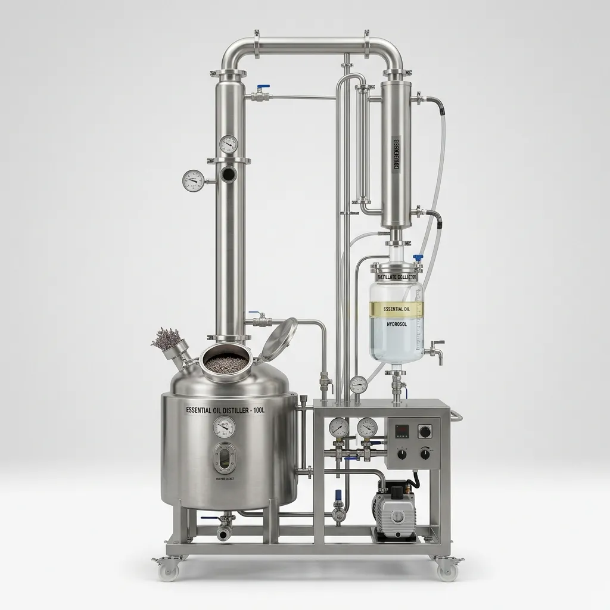

Solusi Mesin Industri Asli
Karena menghapus background putih secara paksa merusak gambar, bagaimana jika kita merangkai mesin-mesin transparan (WebP) yang sudah ada di katalog Anda menjadi satu kesatuan seperti ini?



Menggabungkan gambar mesin-mesin transparan (katalog asli Anda) menjadi satu lini industri tanpa AI dan tanpa tepian kasar.
Karena menghapus background putih secara paksa merusak gambar, bagaimana jika kita merangkai mesin-mesin transparan (WebP) yang sudah ada di katalog Anda menjadi satu kesatuan seperti ini?

